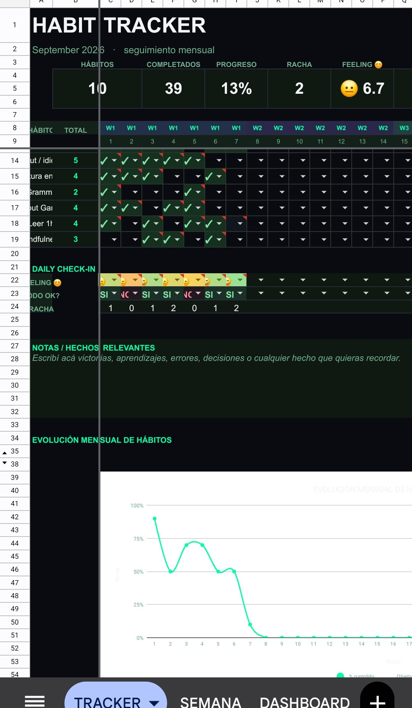
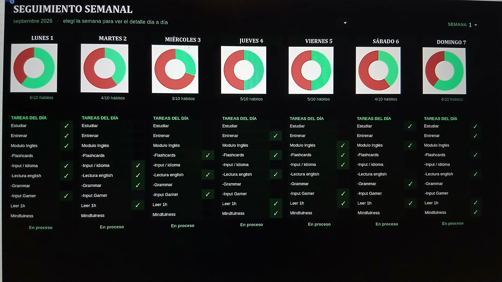
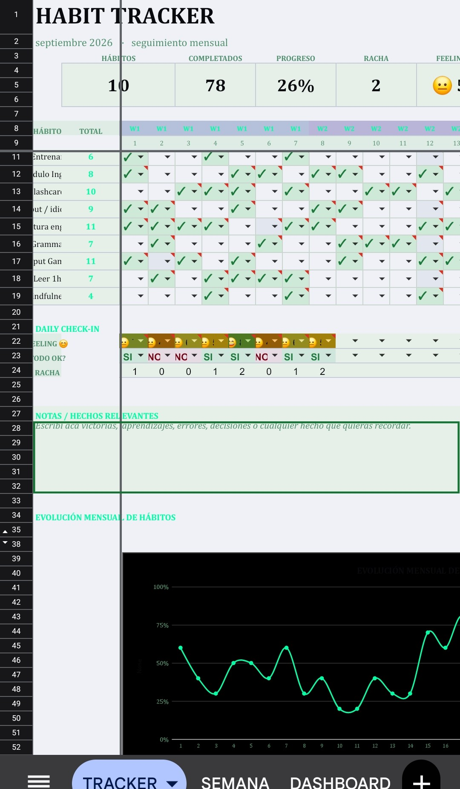

Ya viste por qué la inconsistencia te cuesta caro. Ahora te mostramos cómo se resuelve, en simple.
El Habit Tracker es la forma más simple de dejar de adivinar si estás progresando — y empezar a verlo, día a día, con datos reales.
Es un archivo (funciona en Excel o Google Sheets) donde anotás los hábitos que querés sostener — estudiar, entrenar, tomar agua, lo que sea — y cada día marcás si los cumpliste o no.
La diferencia con anotarlo en un papel o "llevarlo en la cabeza" es que acá, cada tilde que ponés se convierte automáticamente en un número, un gráfico, una racha — sin que vos tengas que calcular nada.
Vos solo ponés el hábito y tildás. El resto — el porcentaje, la racha, el gráfico de progreso — se arma solo.
Nada de fórmulas, nada de configurar. Un tilde por día es toda la acción que hace falta de tu parte.
Tres vistas, un mismo archivo: el registro diario, el detalle semana por semana, y el panel general con tus estadísticas.

Cada fila es un hábito, cada columna un día del mes. No hay nada más que hacer de tu lado — el archivo calcula solo, en tiempo real, cuánto llevás cumplido de cada uno.
✓ La única acción diaria: tildar
Elegís la semana y ves un gráfico por cada día, con la lista exacta de qué cumpliste y qué te quedó pendiente — ideal para revisar cómo te fue sin tener que leer toda la grilla.

Hábitos totales, cuántos completaste, tu racha actual y tu feeling promedio — más un gráfico de evolución que te muestra si vas para arriba o para abajo, mes a mes.
Nada de "sensación" de que estás siendo constante: acá lo ves reflejado en números y curvas reales.
Que necesitás organizar tus materias, repartir el estudio entre parciales y no llegar siempre a último momento.
Que necesitás acomodar el trabajo con la familia y el tiempo propio, sin que uno le coma el lugar al otro.
Que sabés lo que hay que hacer, pero necesitás ver la racha para no cortarla justo cuando menos ganas tenés.
Que estás dejando algo atrás o construyendo algo nuevo, y necesitás una prueba de que sí estás avanzando, aunque sea de a poco.
Es un pago único, sin suscripción. Funciona en Excel y en Google Sheets.
Ver cómo conseguirlo